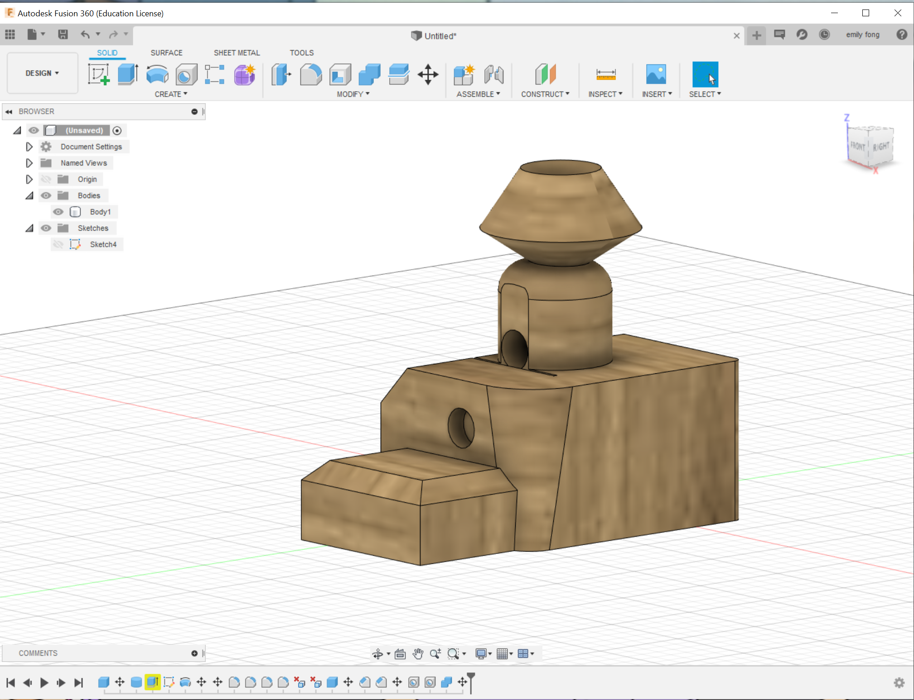
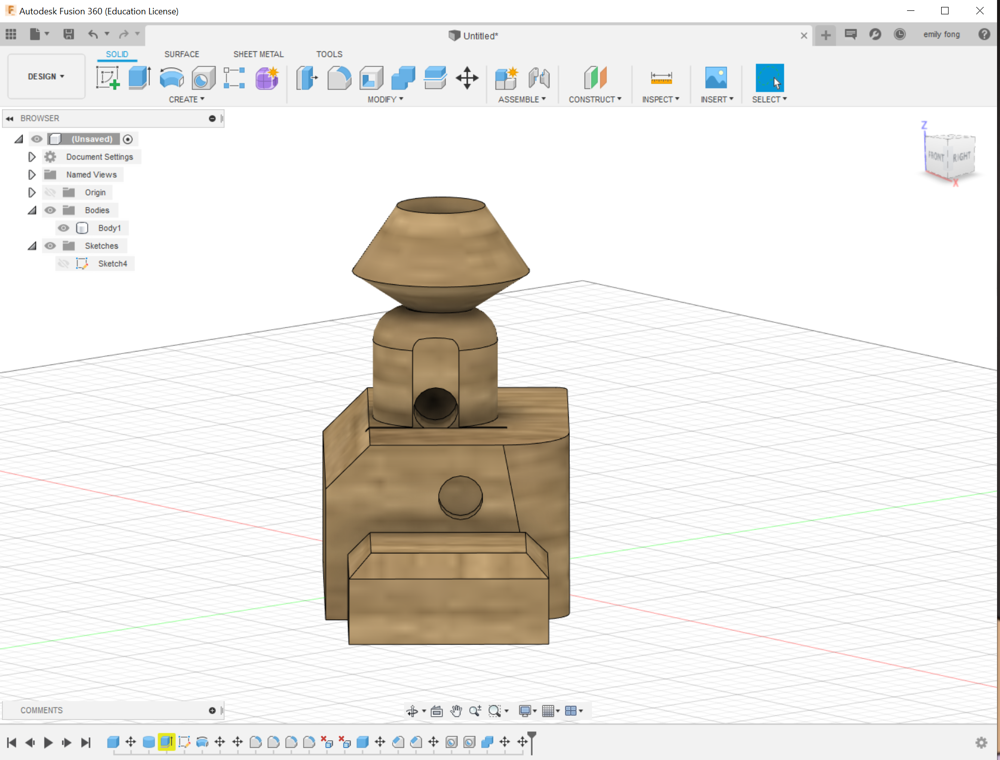
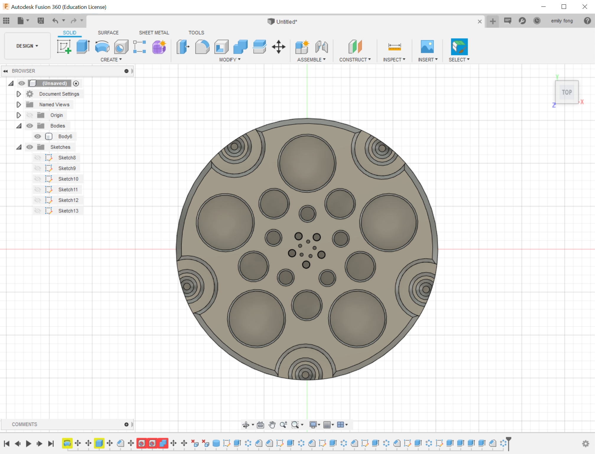
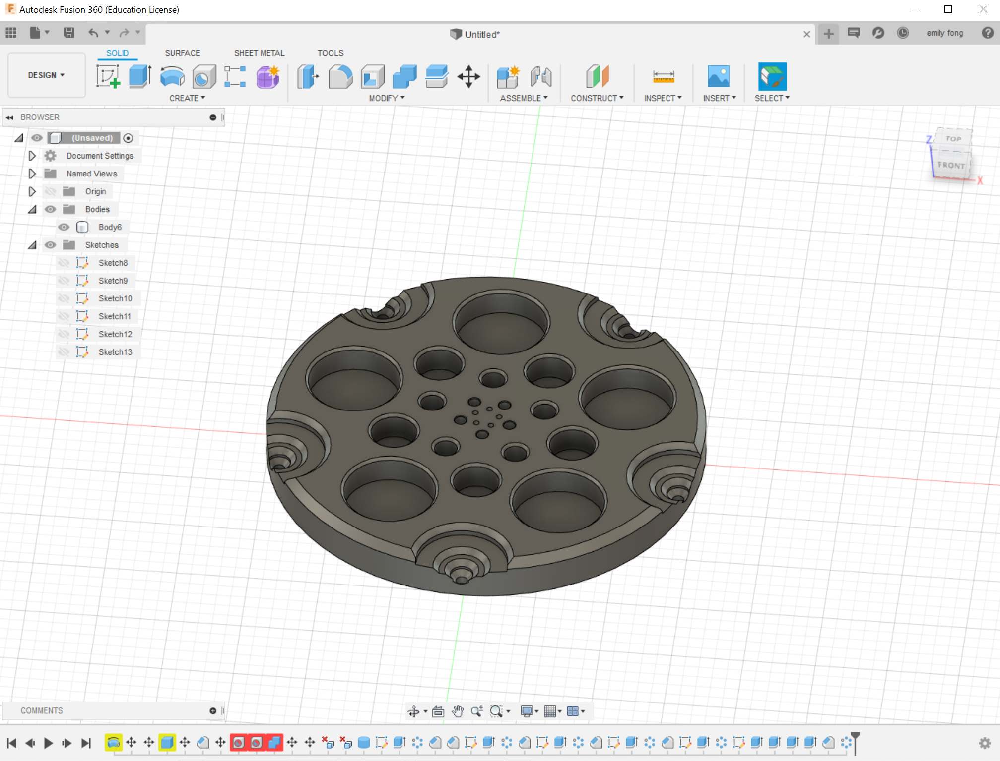
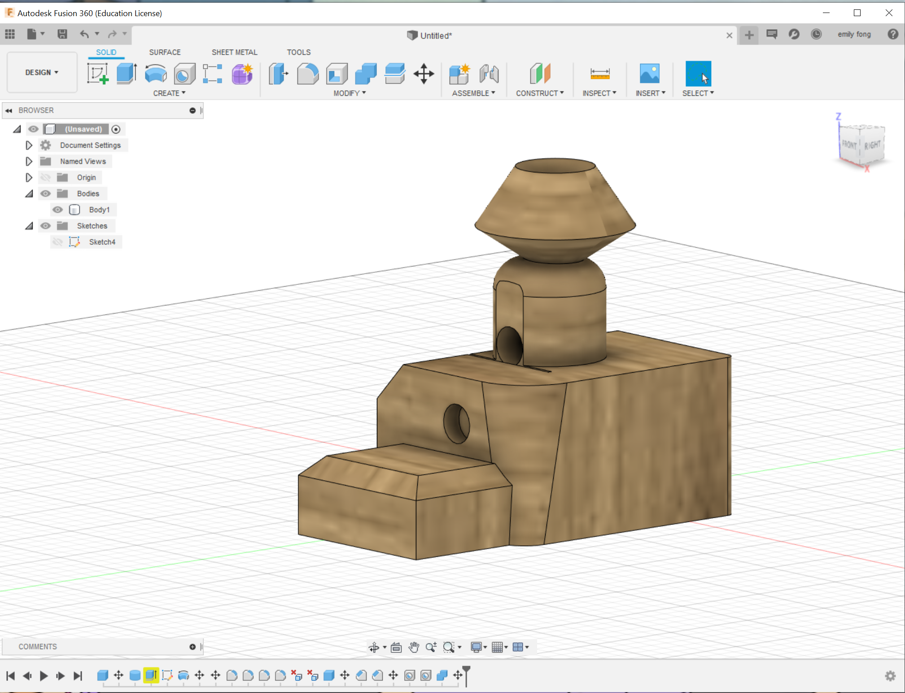
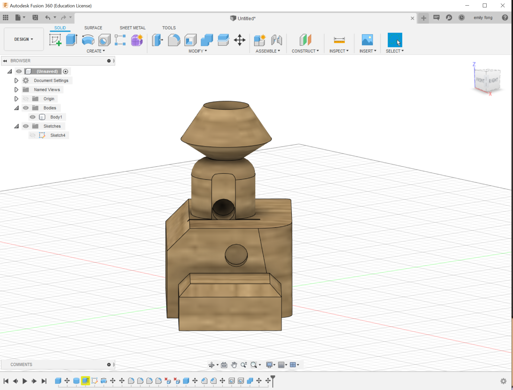
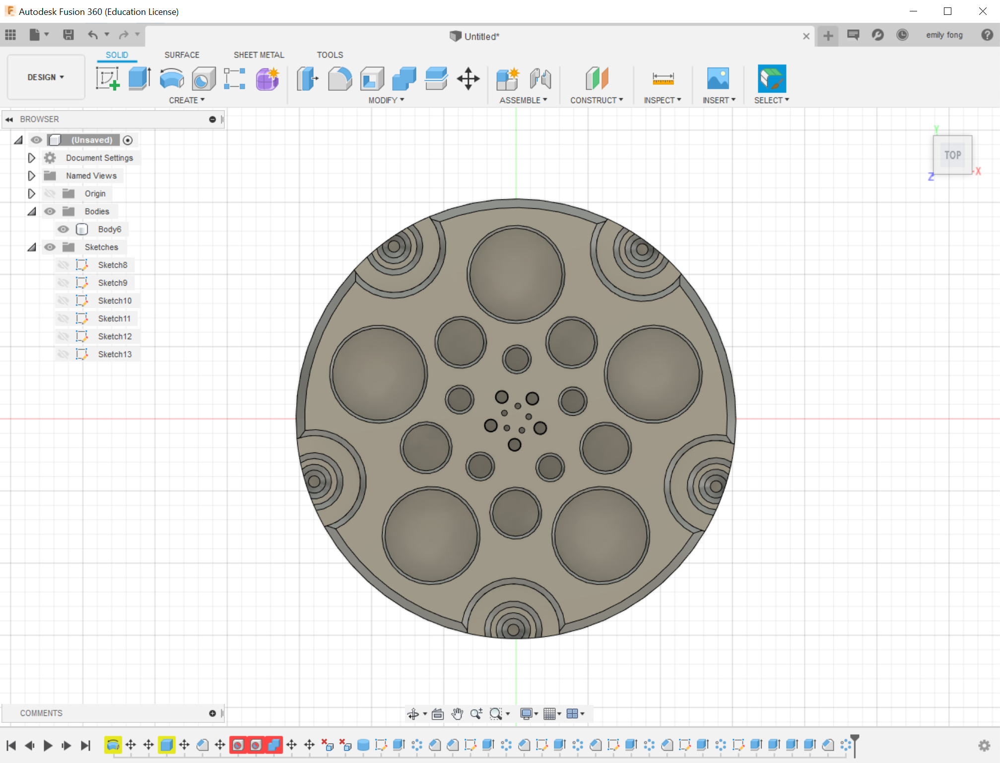
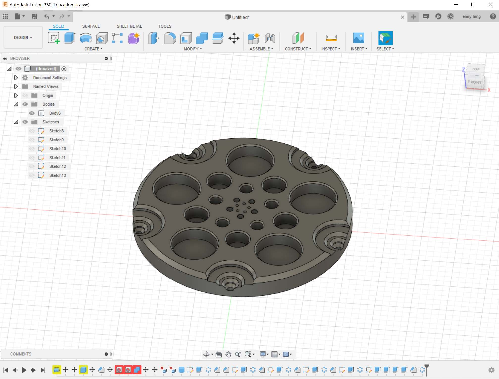

Object 1


Object 2


For the first object, I experimented along with the tutorials and used a wood grain for the appearance. It's an abstract birdhouse perhaps. The second object, I utilized the power of 2 as the diameter(mm) size for the circles created on the plate. As the circles close in it goes from a diameter of 32, 16, 8, 4, to 2 in a circular pattern.



